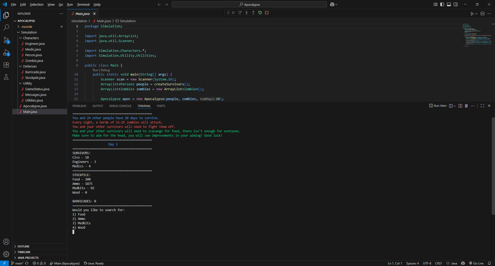

The Apocalypse

One of my favorite things I've made so far during my computer science studies was an Apocalypse simulation. We built upon this entire project throughout the semester, which made it easy to understand the structure and layout of object-oriented programming. There were of course certain requirements to complete this project, but I didn't stop there. The simulation works like this:
Rules
- There are 25 people who have 10 days to survive a zombie apocalypse.
- Every night, a horde of 15-25 (at random) zombies will attack.
- The survivors will need to scavenge for food, ammo, medkits, and wood, as there isn't enough to survive the 10 days.
Strategies
There are a couple of strategies and tips you can use to help more people survive the 10 days.
These include:
-
Gathering wood
- Gathering wood is essential for building barricades. Barricades help slow down the zombie horde, allowing for more kills and less deaths.
-
Keeping watch on your stockpile every morning.
- If your stockpile gets too low, you could run into trouble like not being able to shoot, eat, or build barricades. Keep watch!
-
Healing/Reviving Allies With Medkits
- Medkits can be used to heal and revive dead allies. Make sure you have a healthy supply of these.
-
Keep at least 10 rounds of ammo per person.
- Without it, the odds of winning a figth against a zombie become dramatically low.